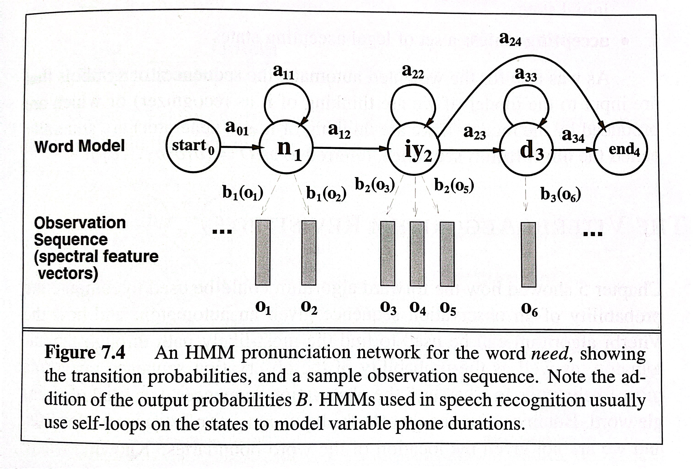

What Are Markov Processes? A Simple Introduction
In this blog, the generalities of Markov Processes will be introduced. The foundation of Markov Processes dewells on the idea that there are states and events. The future behavior of the system depends only on its current state and not on the sequence of events that preceded it. This property is often referred to as the memoryless property.
How Are Markov Processes Applicable Theoretically?
Markov Processes are powerful statistical framework and ideas that could be applied in many different theoretical contexts. The most fundamental would be an investigation of these processes and measures in a mathematical analysis, such as how a limit is met (convergence or stability) while time approaches infinity. This is called the limit theorem.
ℹ️ What are limit theorems and how are they related to stability and convergence?
The theorem describes the distribution of the sum(or average) of a large number of independent, identically distributed random variables. For Markov processes, understanding how the process converges to a particular distribution over time is crucial.
The limit theorem states in the context of Markov processes, the law of large numbers where as the number of trials (or time steps in the case of a Markov process) increases, the average behavior of the process converges to the expected value. In the long run, the observed behavior becomes more predictable.
More on stability and convergence; the behavior of a Markov process as time approaches infinity is often characterized by stability and convergence properties. These properties help in understanding the long-term dynamics and equilibrium states of the process.
How Are Markov Processes Applicable in The Context of NLP?
To thoroughly explain this, we have to bring up the HMM or in full the hidden Markov Model here. It's the same probabilistic technique that branches out from the Markov processes that in particular is applied in the field of language processing.
In a different section (or here), we have touched on the finite state automata and transducers. To recap, they are processes and states that could capture the nature of a regular language (or displays the properties of a regular grammar). On top of that, there's the weighted finite-state automata, which because of its nature of having states and transitions could be monitored as a Markov model with probabilities assigned to each state.
In signal processing, sound waves could be sliced up into spectral features and then further made into vectors for further processing and modeling with a HMM network.
Below is a graph demonstration of the workflow,
| A HMM Pronunciation Network |
|---|
|  |
If we take a look at HHM for the word need and a sample observation sequence. Note the differences from the figure above, the observation sequences are now vectors of spectral features representing the speech signal. Next, note that we've also allowed one state to generate multiple copies of the same observation, by having a loop on the state. This loop allows HMMs to model the variable duration of phones; longer phones require more loops through the HMM.
In summary, here are the parameters that define an HMM:
states: a set of states
transition probabilities: a set of probabilities . Each represents the probability of transitioning from state i to state j. The set of these is the transition probability matrix.
observation likelihoods: a set of observation likelihood , each expressing the probability of an observation being generated from a state i.
In a separate blog, Viterbi algorithm will be visited to talk about how the algorithm helps track the best path in these states of an established automaton backed by weights (The forward path is established with an HMM network and the backward path finds the best path in the network with Viterbi or a dynamic programming algorithm).
How Are Markov Processes Applicable in Real Life?
There are many scenarios where Markov processes are applicable in real life due to their ability to model systems with probabilistic state transitions. With some digging, below are some practical applications of Markov processes in various fields.
In many cases, Markov processes reach a stationary or steady-state distribution as time goes to infinity. In this state, the probabilities of being in each state no longer change with time. The stationary distribution provides insights into the long-term behavior of the system.
An ergodic Markov process is one for which, over a sufficiently long period, the system visits all states with a certain probability. This concept is important in understanding the long-term behavior of the process and is related to the idea of convergence.
All in all, the understanding of the Markov processes all comes down to equilibrium, homogeneity, stability, and predictability.
Extra Points to Note: The MCMC (Markov Chain Monte Carlo)
Monte Carlo methods are a broad class of computational algorithms that use random sampling to obtain numerical results. The name "Monte Carlo" refers to the Monte Carlo Casino in Monaco, known for its randomness. These methods are particularly useful when it's difficult or impractical to compute a solution through deterministic methods.
MCMC is a specific type of Monte Carlo method that leverages Markov chains to generate samples from a probability distribution. The basic idea is to construct a Markov chain whose stationary distribution is the target probability distribution that we want to sample from. If the Markov chain is run long enough, the samples it generates will approximate the desired distribution.
Steps of MCMC:
Define the Target Distribution: Identify the probability distribution you want to sample from. This distribution might be the posterior distribution in Bayesian statistics, which is often challenging to obtain analytically.
Construct a Markov Chain: Create a Markov chain such that its stationary distribution matches the target distribution. This involves defining transition probabilities that ensure the chain converges to the desired distribution.
Burn-in Period: Start the Markov chain in some initial state and run it for a certain number of steps to allow it to reach its stationary distribution. This initial phase is called the "burn-in" period.
Sampling: After the burn-in period, the subsequent states generated by the Markov chain are samples from the target distribution.
Connection with Markov Processes:
MCMC relies on Markov chains, which are a type of Markov process. A Markov process is a broader term that encompasses any stochastic process exhibiting the Markov property, which means the future state depends only on the current state, not on the past. Markov chains are a specific type of Markov process with a discrete state space.
In summary, MCMC uses Markov chains to sample from a target distribution, making it a powerful tool in statistics, Bayesian inference, and other fields where obtaining samples from complex distributions is challenging. The Markov property ensures that the sampling process depends only on the current state, making it efficient and suitable for a wide range of applications.